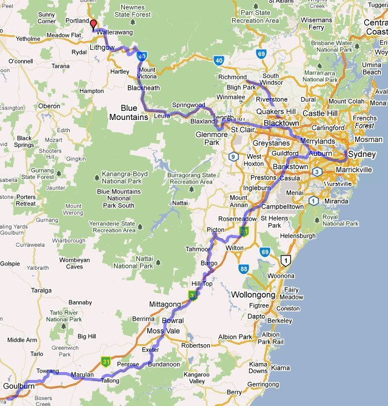
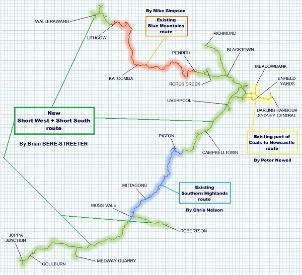

New South Wales - Short West And Short South Route
(version 1.0)
Route design by Brian Bere-Streeter, incorporating routes by Mike Simpson and Chris Nelson
and parts of a route by Peter Newell

This route encompasses the full Short West from Wallerawang to St.Marys in Sydney's west. The route extends onwards to Sydney Terminal (and Enfield and Darling Harbour) in the east. From Sydney terminal, the Short South traverses the Main South from Lidcombe (via Sefton) to beyond Goulburn.
Mainline route length:
- 107 miles from Sydney to Wallerawang; and
- 140 miles from Sydney to Goulburn.
In addition the route includes:
- the suburban line from Granville to Liverpool via Merrylands;
- the Richmond branch from Blacktown to Windsor and Richmond;
- part of the Carlingford branch to Camellia, including all the industrial sidings in the Sandown area;
- part of the Bankstown line from Sefton Park Junction to Birrong;
- part of the Metro Goods Lines from Sefton Park Junction to Chullora Junction (and Enfield);
- the Warwick Farm Racecourse branch;
- part of the Holdsworthy Rifle Range line out of Liverpool;
- the Picton to Mittagong Loop Line;
- part of the Unanderra - Moss Vale line from Moss Vale to Robertson;
- the Medway Quarry branch line.
As well as much original work by Brian Bere-Streeter, this "mega-route" encompasses all of Mike Simpson's Blue Mountains route, Chris Nelson's Southern Highlands route and parts of Peter Newell's Coals To Newcastle route to enable continous running (if you wanted to) from Wallerawang in the west to Goulburn in the south; see below:

Prototype Operator: New South Wales Government Railways and its successors.